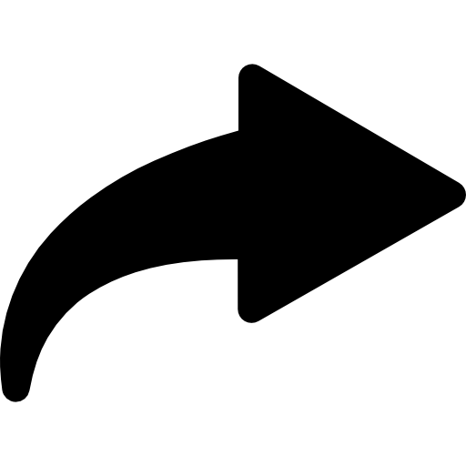
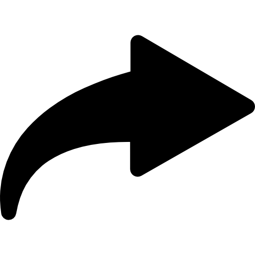

Um Ataque Ao Ceu
O inicio com cara de fim!
28/11/2022 - Sexta-Feira - Dia de sol
8:00
Esse é o horário que o jovem Arthur se arrumava para ir a escola. No inicio um dia normal, fez sua rotina, acordou, escovou os dentes, tomou banho, tomou um cafezin e já saiu a caminho da escola.
No caminho para a escola as coisas começaram a ficar um tanto estranha, ele observou inumeras ambulancias e uma quantidade de acidentes fora do normal, porém seguiu seu rumo.
Chegando na escola avistou duas viaturas (o que não é nada normal), então Arthur entrou na escola e foi direto para o FabLab (Não, lá não é o telecentro, nem a biblioteca), e lá encontrou um dos tecnicos o Renner, peça fundamental para essa historia. Assim que se viram logo deram um abraço, e começaram a conversar...
Logo Arthur perguntou:
- Cara você tem alguma ideia do que está acontecendo? O caminho inteiro vi varias viáturas, ambulancias é
muito estranho!
E Renner respondeu:
- Mano eu tambem achei muito estranho, já ia perguntar. Eu vi só uma noticia no caminho pra cá, falando de
algum surto acontecendo com o pessoal mais velho. Mas não sei se é algo muito serio...
Antes mesmo que Renner terminasse de falar, Gustavo entra no laboratório escandaloso como sempre:
- GENTEEE, VOCÊIS NÃO VÃO ACREDITAR! Eu tava vindo pra cá certo?
Ai, eu tava esperando o farol fechar,
e tinha um velhinho do meu lado, até ai de boa, o farol fechou e eu atravessei, quando eu olho pra trás
vejo o velhinho no chão se contorsendo.
MALUKO eu entrei em panico, o cara que tava dirigindo desceu do carro pra ajudar ele, e eu fiquei desesperado
e vim correndo.
Assim que o Gigante Ventura terminou de falar, a porta do laboratório abriu, Ventura e Arthur se borraram de
medo (o Renner tambem, mas ele precisa manter a pose de homão), quando o momento de drama passou, Vinicius
entrou, o outro tecnico do Lab.
- Opaaaaa.
Arthur e Renner começaram a dar risada da cara do Ventura. E o Ventura revoltado diz:
- MANÉ QUER MATAR A GENTE DO CORAÇÃO!?
Vini olhou para o Ventura com uma cara sem entender nada, quando novamente a porta se abre e o Vini fala:
- Aline chegou.
E logo deu um abraço nela. Logo atrás dela a Nicole tambem chegava, então Vini pensou rapido e disse:
- Agora podem começar o grupo de estudos o foguinho e a agua já chegaram.
Todos riram, já que o cabelo da Nicki é vermelho, e o da Aline AZULLLLL.
Então todos começaram a conversarde assuntos paralelos, e por um breve momento esqueceram do velhinho
e de tudo de estranho que estava acontecendo, e assim o tempo passou e a hora do almoço chegou.
12:30
Então Vini saiu para esquentar sua marmita e também a do Renner, enquanto os outros quatro sairam para
comer juntos.
No caminho se depararam com mais algumas coisas fora do normal, porem nem deram o minimo de atenção,
distraidos como sempre.
Foram no mcdonald's, e lá pediram seus lanches e se sentaram para comer. Enquanto estavam no fastfood,
não tinham a minima ideia do que estava acontecendo no laboratório.
Quando Vini estava voltando com as marmitas quentes, assim que entrou no Lab, se deparou com uma cena muito
estranha, um homem deitado no chão, com o que parecia ser sangue, e com uma mulher aparentemente mordendo ele.
Vini então chamou o Renner e disse:
- Renner, se liga ali.
Renner levantou e logo tomou um susto:
- Que porra é essa mano?
Logo depois se depararam com gritos e choros, e uma multidão correndo. Algum tempo depois a mulher em cima do homem, olhou diretamente para eles, ela estava com os olhos brancos, muito pálida e tambem com a boca coberta de sangue. Depois de ver o rosto da mulher horripilante, eles acharam que era algum tipo de fantasia do halloween, algo assim. Porém logo depois, viram a mulher tomar uma facada, do que parecia ser um policial, e a mulher nem expressou dor alguma, apenar mordeu o pescoço do policial, e uma imensa quantidade de sangue voou. E logo o Vini sacou o que estava acontecendo ali.
- Já sei!
Disse Vinicius.
- É simples, um apocalipse zumbi, É ISSO CARA!
Renner então deu risada e disse:
- Tranca lá a porta do Lab, vamo comer.
Masss, mal sabiam eles que Vinicius havia acertado o que realmente estava acontecendo por ali...
UM APOCALIPSE ZUMBI!!!!!!!!
Bom, tecnicamente, ainda não apocalipse, porém prestes a se tornar um...
♫MUSICA ASSUSTADORA♫
 
